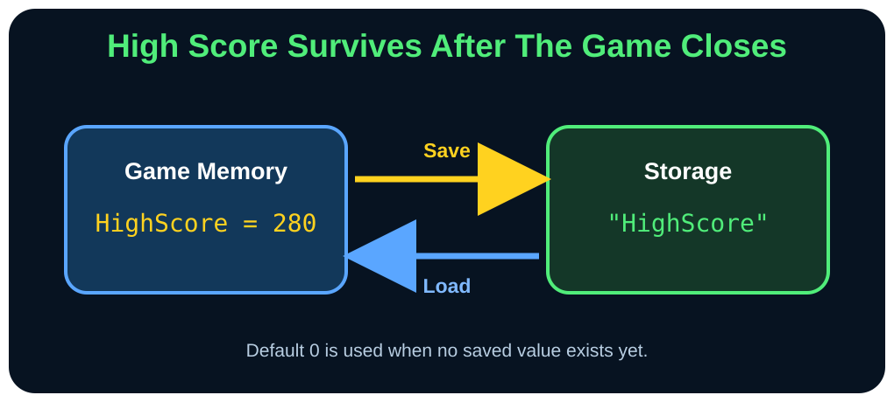

Paste checkpoint 2
Create the Game’s Memory
The startup program owns screen, score, timing, and input state. A Snake object owns the moving body.
Create the game-facing values
Leave one blank line after Checkpoint 1, then paste this block into Program-NoDemo.smile.
Dim Player As New Snake()
Dim Food As GridPoint
Dim State As GameState
Dim HighScore As Number
Dim Score As Number
Dim MoveDelay As Number
Dim NextMoveTime As Number
Dim Key As Number
With Food
.X = 0
.Y = 0
End With
State = GameState.Title
Score = 0
MoveDelay = StartDelay
NextMoveTime = 0
Key = KEY_NONE
'----------------------------------------------------------------------------------------------------
Load HighScore From "HighScore" Default 0Important starting facts
Player
Dim Player As New Snake() creates one live object and runs its constructor. The program asks that object to turn, move, grow, and answer collision questions.
Food
GridPoint keeps X and Y together as one value. With Food makes its two field assignments easy to read.
State
GameState.Title is clearer than a magic number. The compiler also prevents mixing a game state with a direction.
High score
Default 0 gives a brand-new player a safe score when no saved value exists.

Repetition builds memory
Reinforce what you learned
Say it again
Variables remember changing facts during the game; Load restores the saved high score between runs.
Recall it
Which value owns the snake’s body and direction state?
Check your answer
The Player object. Its private fields cannot be changed directly by the startup program.